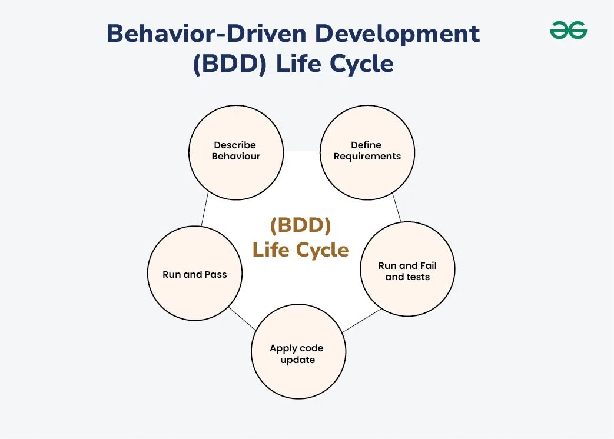

Behavior-driven development (BDD) on agiilne tarkvaraarenduse metoodika,
mis seab esikohale arendajate, testijate ja mittetehniliste sidusrühmade vahelise koostöö,
et tagada kliendikesksed tulemused. BDD-s määratletakse nõuded soovitud käitumise ja
kasutajalugude alusel, mis võimaldab selgemat suhtlust ja keskenduda äriväärtuse pakkumisele.
See lähenemine rõhutab käivitatavate spetsifikatsioonide loomist, mis toimivad nii
dokumentatsiooni kui ka testidena, soodustades ühist arusaamist
projekti eesmärkidest ja parandades toote kvaliteeti.
BDD-d peetakse testiks, mis illustreerib süsteemi käitumist. See julgustab kasutama vestlust
ja konkreetseid näiteid lihtsas keeles kõigi arendustööga seotud isikute jaoks,
et tuua süsteemi käitumisesse paremat selgust. Selles arenduses määratlevad tehnikad
süsteemi käitumisel põhineva funktsiooni arendamiseks erinevaid viise ning tehnikad on
kombineeritud testipõhisest arendusest (TDD) ja domeenipõhisest arendusest (DDD).
Behavior-driven development on automaattestimisel hea lähenemisviis, kuna see keskendub rohkem
süsteemi käitumisele kui koodi rakendamisele. BDD-d hõlbustatakse loomuliku keele kaudu, et
väljendada süsteemi käitumist ja süsteemist oodatavaid tulemusi.
BDD-sse on kaasatud kõik osapooled, nagu klient, arendaja, testija ja sidusrühmad,
et pidada koostööd ja illustreerida süsteemi käitumist.
BDD testimine hõlmab stsenaariumide kirjutamist sellises keeles nagu Gherkin, nende
automatiseerimist tarkvara käitumise kinnitamiseks ja nõuete täitmise tagamist.
BDD testimisel kirjeldatakse stsenaariume domeenispetsiifilise keele (DSL) abil, nagu Gherkin,
mis on hõlpsasti arusaadav nii tehnilistele kui ka mittetehnilistele meeskonnaliikmetele.
Näiteks võib stsenaariumi kirjeldada järgmiselt: "Kui kasutaja on sisse logitud, siis kui ta
klõpsab nupul "logi välja", tuleb ta välja logida ja suunata sisselogimislehele.
Funktsioonifailid on dokumendid, mis sisaldavad Gherkini skripte ja muud asjakohast sisu.

| Head | Halvad |
|---|---|
| Täiustatud koostöö: BDD edendab koostööd ettevõtete sidusrühmade, arendajate ja testijate vahel, kasutades nõuete kirjeldamiseks ühist keelt. See soodustab meeskonnaliikmete paremat mõistmist ja ühtlustumist. |
Esialgne õppimine: BDD kasutuselevõtt nõuab meeskondadelt uute raamistike, tööriistade ja metoodikate õppimist, mis võib algselt aeglustada arendusprotsessi, kui meeskonnaliikmed tutvuvad uue lähenemisviisiga. |
| Selgemad nõuded: stsenaariumide kirjutamine lihtsas keeles Gherkini süntaksi abil aitab nõudeid ja ootusi selgitada. See vähendab ebaselgust ja tagab, et kõigil on ühine arusaam soovitud käitumisest. |
Aeganõudev protsess: funktsioonifailide kirjutamine, stsenaariumide määratlemine ja sammude määratluste säilitamine võib olla aeganõudev, eriti suurte ja keeruliste projektide puhul, mis võib põhjustada viivitusi tarnimisel. |
| Keskendumine kasutaja käitumisele: BDD rõhutab süsteemi käitumist kasutaja vaatenurgast. Keskendudes kasutajate lugudele ja stsenaariumidele, tagab BDD, et arendustegevused on vastavuses kasutajate vajaduste ja prioriteetidega. |
Sõltuvus sidusrühmade kaasamisest: BDD tugineb suurel määral koostööle sidusrühmade, sealhulgas ärianalüütikute, arendajate, testijate ja tooteomanike vahel. Sidusrühmade aktiivse osaluse puudumine võib takistada BDD tõhusust. |
| Probleemide varajane tuvastamine: BDD julgustab enne juurutamist teste kirjutama, võimaldades meeskondadel tuvastada võimalikud probleemid arendusprotsessi varajases staadiumis. See toob kaasa kiiremad tagasisideahelad ja vähendab hilisemate defektide parandamise kulusid. |
Raskused keerulistes stsenaariumides: BDD suudab suurepäraselt tabada käitumist lihtsate stsenaariumide jaoks, kuid võib olla raskusi väga keeruliste stsenaariumide või äärmuslike juhtumitega, mis põhjustab testimise automatiseerimise ebaselgust või ebatõhusust. |
| Automatiseeritud testimine: Automatiseeritud testid annavad kiiret ja usaldusväärset tagasisidet rakenduse käitumise kohta, võimaldades meeskondadel regressioone kiiresti tuvastada ja tagada pideva kvaliteedi. |
Üldised hoolduskulud: projekti arenedes võib olemasolevate funktsioonifailide ja sammude määratluste hooldamine ja värskendamine, et kajastada muudatusi nõuetes või funktsionaalsuses, muutuda keeruliseks ja ressursimahukaks. |
| Täiustatud dokumentatsioon: BDD stsenaariumid toimivad käivitatava dokumentatsioonina süsteemi käitumise kohta. |
Potentsiaalne üleinseneerimine: ilma nõuetekohase juhendamise ja järelevalveta võivad meeskonnad oma BDD-teste üle projekteerida, lisades tarbetut keerukust ja vähendades pikas perspektiivis hooldatavust. |
| Parem koodikvaliteet: BDD julgustab kirjutama testitavat ja modulaarset koodi, mis järgib stsenaariumides kirjeldatud käitumist. See toob kaasa paremini disainitud tarkvara, millel on vähem defekte ja lihtsam hooldus. | Tööriistade piirangud: BDD tõhusus sõltub suuresti tugitööriistade ja raamistike saadavusest ja sobivusest. Piiratud tööriistavalikud või ühilduvusprobleemid olemasolevate süsteemidega võivad takistada kasutuselevõttu ja rakendamist. |